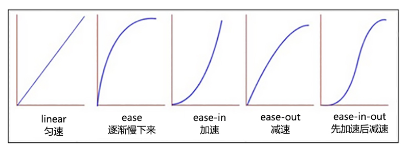
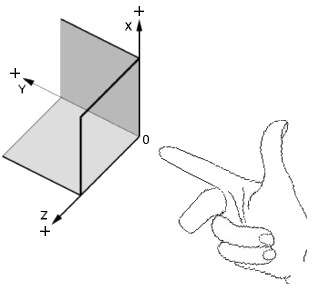

<!DOCTYPE html><html><head><meta charset="utf-8"><title>教学讲义 | 技术学派</title><meta name="viewport" content="width=device-width,initial-scale=1,maximum-scale=1"><meta name="keywords" content="IT培训, Python, 大数据, 人工智能, Web前端, PHP, "><meta name="description" content="第一章 动效技术简介技术兼容性性能灵活性MovieCCCgifAACjavaScriptA-BA+CSS3A-A+BCanvasAA+ASVGAA+A第一节 css3 动画transition 过渡动画transition: 样式 时间 速度函数 延迟时间;样式: all 所有样式速度函数：linear 匀速 | ease 平滑过渡 | ease-in 加速 | ease-out 减速|ease-"><meta property="og:type" content="website"><meta property="og:title" content="教学讲义"><meta property="og:url" content="http://www.JiShuXuePai.com/tech/animate/notes.html"><meta property="og:site_name" content="技术学派"><meta property="og:description" content="第一章 动效技术简介技术兼容性性能灵活性MovieCCCgifAACjavaScriptA-BA+CSS3A-A+BCanvasAA+ASVGAA+A第一节 css3 动画transition 过渡动画transition: 样式 时间 速度函数 延迟时间;样式: all 所有样式速度函数：linear 匀速 | ease 平滑过渡 | ease-in 加速 | ease-out 减速|ease-"><meta property="og:locale" content="zh-CN"><meta property="og:image" content="http://www.jishuxuepai.com/tech/animate/images/ease.jpg"><meta property="og:updated_time" content="2018-05-11T08:14:14.791Z"><meta name="twitter:card" content="summary"><meta name="twitter:title" content="教学讲义"><meta name="twitter:description" content="第一章 动效技术简介技术兼容性性能灵活性MovieCCCgifAACjavaScriptA-BA+CSS3A-A+BCanvasAA+ASVGAA+A第一节 css3 动画transition 过渡动画transition: 样式 时间 速度函数 延迟时间;样式: all 所有样式速度函数：linear 匀速 | ease 平滑过渡 | ease-in 加速 | ease-out 减速|ease-"><meta name="twitter:image" content="http://www.jishuxuepai.com/tech/animate/images/ease.jpg"><link rel="stylesheet" href="/libs/bootstrap/bootstrap-grid.css"><link rel="stylesheet" href="/libs/font-awesome/css/font-awesome.min.css"><link rel="stylesheet" href="/libs/titillium-web/styles.css"><link rel="stylesheet" href="/libs/source-code-pro/styles.css"><link rel="stylesheet" href="/css/style.css"><script src="/libs/jquery/jquery.min.js"></script><link rel="stylesheet" href="/libs/lightgallery/css/lightgallery.min.css"><link rel="stylesheet" href="/libs/justified-gallery/justifiedGallery.min.css"><script>var _hmt=_hmt||[];!function(){var e=document.createElement("script");e.src="//hm.baidu.com/hm.js?4c1bd812de3c30edbaa2b803c66f0a04";var t=document.getElementsByTagName("script")[0];t.parentNode.insertBefore(e,t)}()</script></head></html><body><div id="wrap"><header id="header"><div id="header-outer" class="outer"><div class="container"><div class="container-inner"><div id="header-title"><h1 class="logo-wrap"><a href="/" class="logo"></a></h1></div><div id="header-inner" class="nav-container"><a id="main-nav-toggle" class="nav-icon fa fa-bars">菜单</a><div class="nav-container-inner"><ul id="main-nav"><li class="main-nav-list-item"><a class="main-nav-list-link" href="/">主页</a></li><li class="main-nav-list-item"><a class="main-nav-list-link" href="/edu/index.html">学编程</a></li><li class="main-nav-list-item"><a class="main-nav-list-link" href="/blog/">博客</a></li><li class="main-nav-list-item"><a class="main-nav-list-link" href="/tips.html">学习建议</a></li><li class="main-nav-list-item"><a class="main-nav-list-link" href="/about.html">关于</a></li></ul><nav id="sub-nav"><div id="search-form-wrap"><form class="search-form"><input type="text" class="ins-search-input search-form-input" placeholder="搜索"> <button type="submit" class="search-form-submit"></button></form><div class="ins-search"><div class="ins-search-mask"></div><div class="ins-search-container"><div class="ins-input-wrapper"><input type="text" class="ins-search-input" placeholder="想要查找什么..."> <span class="ins-close ins-selectable"><i class="fa fa-times-circle"></i></span></div><div class="ins-section-wrapper"><div class="ins-section-container"></div></div></div></div><script>window.INSIGHT_CONFIG={TRANSLATION:{POSTS:"文章",PAGES:"页面",CATEGORIES:"分类",TAGS:"标签",UNTITLED:"(未命名)"},ROOT_URL:"/",CONTENT_URL:"/content.json"}</script><script src="/js/insight.js"></script></div></nav></div></div></div></div></div></header><div class="container"><div class="main-body container-inner"><div class="main-body-inner"><section id="main"><div class="main-body-header"><h1 class="header"><em class="page-title-link" data-url="/tech/animate/notes.html">教学讲义</em><div class="author">杨永胜</div></h1></div><div class="main-body-content"><article id="page-" class="article article-single article-type-page" itemscope itemprop="blogPost"><div class="article-inner"><header class="article-header"><h1 class="article-title" itemprop="name">教学讲义</h1></header><div class="article-entry" itemprop="articleBody"><h1 id="第一章-动效技术简介"><a href="#第一章-动效技术简介" class="headerlink" title="第一章 动效技术简介"></a>第一章 动效技术简介</h1><table><thead><tr><th style="text-align:center">技术</th><th style="text-align:center">兼容性</th><th style="text-align:center">性能</th><th style="text-align:center">灵活性</th></tr></thead><tbody><tr><td style="text-align:center">Movie</td><td style="text-align:center">C</td><td style="text-align:center">C</td><td style="text-align:center">C</td></tr><tr><td style="text-align:center">gif</td><td style="text-align:center">A</td><td style="text-align:center">A</td><td style="text-align:center">C</td></tr><tr><td style="text-align:center">javaScript</td><td style="text-align:center">A-</td><td style="text-align:center">B</td><td style="text-align:center">A+</td></tr><tr><td style="text-align:center">CSS3</td><td style="text-align:center">A-</td><td style="text-align:center">A+</td><td style="text-align:center">B</td></tr><tr><td style="text-align:center">Canvas</td><td style="text-align:center">A</td><td style="text-align:center">A+</td><td style="text-align:center">A</td></tr><tr><td style="text-align:center">SVG</td><td style="text-align:center">A</td><td style="text-align:center">A+</td><td style="text-align:center">A</td></tr></tbody></table><h2 id="第一节-css3-动画"><a href="#第一节-css3-动画" class="headerlink" title="第一节 css3 动画"></a>第一节 css3 动画</h2><p><strong>transition 过渡动画</strong><br>transition: 样式 时间 速度函数 延迟时间;</p><p>样式: all 所有样式</p><p>速度函数：linear 匀速 | ease 平滑过渡 | ease-in 加速 | ease-out 减速|ease-in-out 先加后减;</p><p></p><p><strong>transform 变形动画</strong></p><p>rotate(); 旋转 | scale(); 缩放 | translate(); 位移 | skew(); 倾斜</p><p>rotate(30deg) | 数字 1.2 | 100px | skew(50deg)</p><p><strong>animation 关键帧动画</strong></p><p>(1) 定义动画</p><p>@Keyframes animateName{<br>​ 0% { css }<br>​ 50% { css }<br>​ 100% { css }<br>}</p><p>(2) 应用动画</p><p>.box{ animation: 动画名称 时间 速度函数 延迟时间 播放次数; }</p><p>[参数说明]</p><p>播放次数 infinite | number;<br>animation-direction normal | alternate; (alternate 奇数次反向播放)</p><p>[ animation-fill-mode ] 属性定义在动画开始前和开始后的操作;<br>none 不改变默认行为;<br>forwards 动画完成后停留在最后一帧;<br>backwards 有delay时动画开始应用起始帧属性;<br>both 同时具有forwards 和 backwards效果;</p><h2 id="第二节-jquery动画"><a href="#第二节-jquery动画" class="headerlink" title="第二节 jquery动画"></a>第二节 jquery动画</h2><p><strong>jquery 动效</strong></p><p>show() | hide() | fadeIn() | fadeOut() | slideDown() | slideUp()</p><p>animate() 动画</p><p>$(“#box”).animate({“width”:”500px”},1000,”linear”,function(){ callback() })</p><p>注意: animate 只对数值型属性生效;</p><p>数值型属性 : opacity width ; 字符型属性： background-color ;</p><p>stop() | finish() 的区别</p><p>stop() 执行当前动画前，停止正在运行的所有动画;</p><p>finish() 执行当前动画前，完成正在运行的动画;</p><h1 id="第二章-2D动画实例"><a href="#第二章-2D动画实例" class="headerlink" title="第二章 2D动画实例"></a>第二章 2D动画实例</h1><h2 id="第一节-渐序动画-项目1"><a href="#第一节-渐序动画-项目1" class="headerlink" title="第一节 渐序动画(项目1)"></a>第一节 渐序动画(项目1)</h2><figure class="highlight plain"><table><tr><td class="gutter"><pre><span class="line">1</span><br><span class="line">2</span><br><span class="line">3</span><br><span class="line">4</span><br><span class="line">5</span><br><span class="line">6</span><br><span class="line">7</span><br><span class="line">8</span><br><span class="line">9</span><br><span class="line">10</span><br><span class="line">11</span><br><span class="line">12</span><br><span class="line">13</span><br><span class="line">14</span><br><span class="line">15</span><br><span class="line">16</span><br><span class="line">17</span><br><span class="line">18</span><br><span class="line">19</span><br><span class="line">20</span><br><span class="line">21</span><br><span class="line">22</span><br><span class="line">23</span><br><span class="line">24</span><br><span class="line">25</span><br><span class="line">26</span><br><span class="line">27</span><br><span class="line">28</span><br><span class="line">29</span><br><span class="line">30</span><br><span class="line">31</span><br><span class="line">32</span><br><span class="line">33</span><br><span class="line">34</span><br><span class="line">35</span><br><span class="line">36</span><br><span class="line">37</span><br><span class="line">38</span><br><span class="line">39</span><br><span class="line">40</span><br><span class="line">41</span><br><span class="line">42</span><br><span class="line">43</span><br><span class="line">44</span><br></pre></td><td class="code"><pre><span class="line"></span><br><span class="line">[思路分析]</span><br><span class="line">1 静态html结构</span><br><span class="line">2 jq实现dom结构</span><br><span class="line">3 delay实现延迟隐藏</span><br><span class="line">4 递归延迟隐藏</span><br><span class="line">5 随机隐藏</span><br><span class="line"></span><br><span class="line">[实现步骤]</span><br><span class="line"></span><br><span class="line">1 静态html结构(总结规律)</span><br><span class="line">&lt;div style=&quot;background-position: 0 0&quot;&gt;&lt;/div&gt;</span><br><span class="line">&lt;div style=&quot;background-position: -196px 0;&quot;&gt;&lt;/div&gt;</span><br><span class="line">&lt;div style=&quot;background-position: -392px 0;&quot;&gt;&lt;/div&gt; </span><br><span class="line"></span><br><span class="line">2 jq实现dom结构</span><br><span class="line">for(var i=0;i&lt;25;i++)&#123;</span><br><span class="line">    var x = i%5;</span><br><span class="line">    var y = parseInt(i/5); </span><br><span class="line">    $(&quot;&lt;div&gt;&lt;/div&gt;&quot;).</span><br><span class="line">    css(&#123;&quot;background-position&quot;:-196*x+&quot;px &quot;+(-100)*y+&quot;px&quot;,&#125;)</span><br><span class="line">    .appendTo($wrap);</span><br><span class="line">&#125;</span><br><span class="line"></span><br><span class="line">3 delay实现延迟隐藏</span><br><span class="line"></span><br><span class="line">$item.each(function(index,item)&#123;</span><br><span class="line">    var time = index*150;</span><br><span class="line">    $item.eq(index).delay(time).animate(&#123;&quot;opacity&quot;:0.1&#125;,150);</span><br><span class="line">&#125;)</span><br><span class="line">	</span><br><span class="line">4 递归延迟隐藏</span><br><span class="line">function hide(index)&#123;		</span><br><span class="line">    $item.eq(index).delay(index*150).animate(&#123;&quot;opacity&quot;:0.1&#125;,150);</span><br><span class="line">    if(index&lt;24)&#123;</span><br><span class="line">        hide(index+1);</span><br><span class="line">    &#125;</span><br><span class="line">&#125;</span><br><span class="line"></span><br><span class="line">5 随机隐藏</span><br><span class="line"> $item.each(function(index,item)&#123;</span><br><span class="line">     var time = Math.random()*300  // [100,1000)</span><br><span class="line">     $item.eq(index).delay(time).animate(&#123;&quot;opacity&quot;:0.1&#125;,500);</span><br><span class="line"> &#125;)</span><br></pre></td></tr></table></figure><h2 id="第二节-图片分散-作业"><a href="#第二节-图片分散-作业" class="headerlink" title="第二节 图片分散(作业)"></a>第二节 图片分散(作业)</h2><p>[要求] 点击大图，分割成n个小图片，向四周分散; 再次点击聚拢;</p><figure class="highlight plain"><table><tr><td class="gutter"><pre><span class="line">1</span><br><span class="line">2</span><br><span class="line">3</span><br><span class="line">4</span><br><span class="line">5</span><br><span class="line">6</span><br><span class="line">7</span><br></pre></td><td class="code"><pre><span class="line">[提示]  图片尺寸: 980*500;   </span><br><span class="line">w= 980/xNum; (xNum 水平向数量)</span><br><span class="line">h= 500/yNum; (yNum 垂直向数量)</span><br><span class="line"></span><br><span class="line">[分散时间]</span><br><span class="line">var t=Math.random()*3+2;</span><br><span class="line">css(&#123;&quot;transition&quot;:&quot;transform &quot;+t+&quot;s,opacity &quot;+t+&quot;s&quot;&#125;)</span><br></pre></td></tr></table></figure><h2 id="第三节-照片墙-项目2"><a href="#第三节-照片墙-项目2" class="headerlink" title="第三节 照片墙(项目2)"></a>第三节 照片墙(项目2)</h2><figure class="highlight plain"><table><tr><td class="gutter"><pre><span class="line">1</span><br><span class="line">2</span><br><span class="line">3</span><br><span class="line">4</span><br><span class="line">5</span><br><span class="line">6</span><br><span class="line">7</span><br><span class="line">8</span><br><span class="line">9</span><br><span class="line">10</span><br><span class="line">11</span><br><span class="line">12</span><br><span class="line">13</span><br><span class="line">14</span><br><span class="line">15</span><br><span class="line">16</span><br><span class="line">17</span><br><span class="line">18</span><br><span class="line">19</span><br><span class="line">20</span><br><span class="line">21</span><br><span class="line">22</span><br><span class="line">23</span><br><span class="line">24</span><br><span class="line">25</span><br><span class="line">26</span><br><span class="line">27</span><br><span class="line">28</span><br><span class="line">29</span><br><span class="line">30</span><br><span class="line">31</span><br><span class="line">32</span><br><span class="line">33</span><br><span class="line">34</span><br><span class="line">35</span><br><span class="line">36</span><br><span class="line">37</span><br><span class="line">38</span><br><span class="line">39</span><br><span class="line">40</span><br><span class="line">41</span><br><span class="line">42</span><br><span class="line">43</span><br><span class="line">44</span><br><span class="line">45</span><br><span class="line">46</span><br><span class="line">47</span><br><span class="line">48</span><br><span class="line">49</span><br><span class="line">50</span><br><span class="line">51</span><br><span class="line">52</span><br><span class="line">53</span><br><span class="line">54</span><br><span class="line">55</span><br><span class="line">56</span><br><span class="line">57</span><br><span class="line">58</span><br><span class="line">59</span><br><span class="line">60</span><br><span class="line">61</span><br><span class="line">62</span><br><span class="line">63</span><br><span class="line">64</span><br><span class="line">65</span><br><span class="line">66</span><br><span class="line">67</span><br><span class="line">68</span><br><span class="line">69</span><br></pre></td><td class="code"><pre><span class="line">[思路分析]</span><br><span class="line">1 初始化显示25个div容器;</span><br><span class="line">2 显示25张小图;</span><br><span class="line">3 显示单张大图 </span><br><span class="line">4 点击小图和大图切换;</span><br><span class="line">5 散开时的位置与动效;</span><br><span class="line"></span><br><span class="line">[具体步骤]</span><br><span class="line">1 初始化显示25个div容器;</span><br><span class="line">for(var i=0;i&lt;25;i++)&#123;</span><br><span class="line">    var x = i%5;</span><br><span class="line">    var y = parseInt(i/5);</span><br><span class="line">    $(&quot;&lt;div&gt;&lt;div class=&apos;pic&apos;&gt;&lt;/div&gt;&lt;/div&gt;&quot;)</span><br><span class="line">    .css(&#123;</span><br><span class="line">        left:x*196+&quot;px&quot;,</span><br><span class="line">        top:y*100+&quot;px&quot;</span><br><span class="line">    &#125;)</span><br><span class="line">    .appendTo($wrap)</span><br><span class="line">&#125;</span><br><span class="line"></span><br><span class="line">2 显示25张小图;</span><br><span class="line">function showSmall()&#123;</span><br><span class="line">    $(&quot;.wrap&gt;div&quot;).each(function(index)&#123;</span><br><span class="line">        $(this).find(&quot;.pic&quot;)</span><br><span class="line">            .css(&#123;</span><br><span class="line">            &quot;background-image&quot;:&quot;url(img/&quot;+index+&quot;.jpg)&quot;,</span><br><span class="line">            &quot;background-size&quot;:&quot;cover&quot;</span><br><span class="line">        &#125;)</span><br><span class="line">    &#125;)</span><br><span class="line">&#125;</span><br><span class="line"></span><br><span class="line">3 显示单张大图 </span><br><span class="line">function showBig(index)&#123;</span><br><span class="line"></span><br><span class="line">    $(&quot;.pic&quot;).css(&#123;</span><br><span class="line">        &quot;background-image&quot;:&quot;url(img/&quot;+index+&quot;.jpg)&quot;,</span><br><span class="line">        &quot;background-size&quot;:&quot;auto&quot;</span><br><span class="line">    &#125;)</span><br><span class="line"></span><br><span class="line">    $(&quot;.pic&quot;).each(function(i)&#123;</span><br><span class="line">        var x = i%5;</span><br><span class="line">        var y = parseInt(i/5);</span><br><span class="line"></span><br><span class="line">        $(this).css(&#123;</span><br><span class="line">        &quot;background-position&quot;:(-1)*196*x+&quot;px &quot; +(-1)*100*y+&quot;px&quot;</span><br><span class="line">        &#125;)</span><br><span class="line">    &#125;)</span><br><span class="line"></span><br><span class="line">&#125;</span><br><span class="line"></span><br><span class="line">4 点击小图和大图切换;</span><br><span class="line">$(&quot;.wrap&gt;div&quot;).click(function()&#123;</span><br><span class="line">    var index = $(this).index();</span><br><span class="line">    if(isSmall)&#123;</span><br><span class="line">    	showBig(index);	</span><br><span class="line">    &#125;else&#123;</span><br><span class="line">   		 showSmall();</span><br><span class="line">    &#125;</span><br><span class="line">    isSmall = !isSmall;</span><br><span class="line">&#125;)</span><br><span class="line"></span><br><span class="line">5 散开时的位置与动效;</span><br><span class="line">var disX = (x-2)*50;</span><br><span class="line">var disY = (y-2)*50;</span><br><span class="line">var deg = Math.random()*60-30// [-30deg,30deg)</span><br><span class="line"></span><br><span class="line">$(this).css(&#123;</span><br><span class="line">	&quot;transform&quot;:&quot;translate(&quot;+disX+&quot;px,&quot;+disY+&quot;px) rotate(&quot;+deg+&quot;deg)&quot;,</span><br><span class="line">&#125;);</span><br></pre></td></tr></table></figure><h2 id="第四节-手风琴-作业"><a href="#第四节-手风琴-作业" class="headerlink" title="第四节 手风琴(作业)"></a>第四节 手风琴(作业)</h2><p>[思路分析]</p><p>DOM结构如下所示，</p><p>(1) 4个item水平布局,溢出隐藏;<br>(2) ul宽度为item的2倍,2个li宽度与item同;<br>(3) 当点击按钮时，ul复位, 重设当前图,ul移动;</p><figure class="highlight plain"><table><tr><td class="gutter"><pre><span class="line">1</span><br><span class="line">2</span><br><span class="line">3</span><br><span class="line">4</span><br><span class="line">5</span><br><span class="line">6</span><br><span class="line">7</span><br><span class="line">8</span><br><span class="line">9</span><br><span class="line">10</span><br><span class="line">11</span><br></pre></td><td class="code"><pre><span class="line">[参考网址]</span><br><span class="line">http://www.jq22.com/yanshi4546</span><br><span class="line"></span><br><span class="line">&lt;div class=&quot;wrap&quot;&gt;</span><br><span class="line">    &lt;div class=&quot;item&quot;&gt;</span><br><span class="line">        &lt;ul&gt;</span><br><span class="line">            &lt;li&gt;&lt;/li&gt;</span><br><span class="line">            &lt;li&gt;&lt;/li&gt;</span><br><span class="line">        &lt;/ul&gt;</span><br><span class="line">    &lt;/div&gt;</span><br><span class="line">&lt;/div&gt;</span><br></pre></td></tr></table></figure><h1 id="第三章-3D变形动画"><a href="#第三章-3D变形动画" class="headerlink" title="第三章  3D变形动画"></a>第三章 3D变形动画</h1><h2 id="第一节-3D动画基础"><a href="#第一节-3D动画基础" class="headerlink" title="第一节 3D动画基础"></a>第一节 3D动画基础</h2><p>[ 3D空间 ]</p><table><thead><tr><th>属性</th><th>描述</th></tr></thead><tbody><tr><td>transform-style</td><td>flat(默认)\</td><td>preserve-3d 3d空间;</td></tr><tr><td>transform-origin</td><td>left bottom 变形基线</td></tr><tr><td>perspective</td><td>3000px 景深;</td></tr><tr><td>perspective-origin</td><td>20% 50% 用户视角</td></tr></tbody></table><p></p><p>[ 3D动画 ]</p><p>rotateX(100deg)| rotateY() | rotateZ() [ 范例 ] 沿着x y z 轴旋转的平面, 理解3d动画;</p><p>transform-origin:left bottom; 变形基线(点);</p><p></p><h2 id="第二节-3D-立方体-项目3"><a href="#第二节-3D-立方体-项目3" class="headerlink" title="第二节 3D-立方体(项目3)"></a>第二节 3D-立方体(项目3)</h2><figure class="highlight plain"><table><tr><td class="gutter"><pre><span class="line">1</span><br><span class="line">2</span><br><span class="line">3</span><br><span class="line">4</span><br><span class="line">5</span><br><span class="line">6</span><br><span class="line">7</span><br><span class="line">8</span><br><span class="line">9</span><br><span class="line">10</span><br><span class="line">11</span><br><span class="line">12</span><br></pre></td><td class="code"><pre><span class="line">[知识点]</span><br><span class="line"> 伪元素选择器: first-child  nth-child   nth-type-of</span><br><span class="line"></span><br><span class="line">1 6个面拼合为立方体;</span><br><span class="line">#box li:nth-child(1)&#123; background-color:rgba(240,87,90,0.49); transform:rotateX(0deg) translateZ(100px)&#125;</span><br><span class="line">#box li:nth-child(2)&#123; background-color:rgba(120,87,33,0.49); transform:rotateX(90deg) translateZ(100px)&#125;</span><br><span class="line"></span><br><span class="line">2 对父容器应用关键帧动画;</span><br><span class="line">@keyframes roll&#123;</span><br><span class="line">    0%&#123; transform:rotateX(0deg) rotateY(0deg); &#125;</span><br><span class="line">	100%&#123; transform: rotateX(360deg) rotateY(360deg)&#125;	</span><br><span class="line">&#125;</span><br></pre></td></tr></table></figure><h2 id="第三节-3D-banner动画-项目4"><a href="#第三节-3D-banner动画-项目4" class="headerlink" title="第三节 3D-banner动画(项目4)"></a>第三节 3D-banner动画(项目4)</h2><figure class="highlight plain"><table><tr><td class="gutter"><pre><span class="line">1</span><br><span class="line">2</span><br><span class="line">3</span><br><span class="line">4</span><br><span class="line">5</span><br><span class="line">6</span><br><span class="line">7</span><br><span class="line">8</span><br><span class="line">9</span><br><span class="line">10</span><br><span class="line">11</span><br><span class="line">12</span><br><span class="line">13</span><br><span class="line">14</span><br><span class="line">15</span><br><span class="line">16</span><br><span class="line">17</span><br><span class="line">18</span><br><span class="line">19</span><br></pre></td><td class="code"><pre><span class="line"></span><br><span class="line">[旋转设置]</span><br><span class="line">transform-origin:bottom  // 基线旋转;</span><br><span class="line"></span><br><span class="line">[关键帧动画]</span><br><span class="line">@keyframes s1&#123;</span><br><span class="line">    0%&#123;transform:rotateX(0); opacity:1&#125;</span><br><span class="line">    100%&#123; transform:rotateX(-180deg); opacity:0	&#125;</span><br><span class="line">&#125;</span><br><span class="line"></span><br><span class="line">[旋转事件]</span><br><span class="line">$(&quot;img&quot;).eq(page).removeClass().addClass(&quot;s1&quot;);</span><br><span class="line"></span><br><span class="line">[正向旋转]</span><br><span class="line">var num = 0;</span><br><span class="line">$(&quot;.btn&quot;).click(function()&#123;</span><br><span class="line">     num++;  if(num&gt;count)&#123; num = 0&#125;  // count 为banner图片总数;</span><br><span class="line">     $(&quot;img&quot;).eq(num).removeClass().addClass(&quot;s1&quot;);</span><br><span class="line">&#125;)</span><br></pre></td></tr></table></figure><ul><li><strong>3D-旋转木马(作业)</strong></li></ul><figure class="highlight plain"><table><tr><td class="gutter"><pre><span class="line">1</span><br><span class="line">2</span><br><span class="line">3</span><br><span class="line">4</span><br><span class="line">5</span><br><span class="line">6</span><br><span class="line">7</span><br><span class="line">8</span><br><span class="line">9</span><br><span class="line">10</span><br><span class="line">11</span><br><span class="line">12</span><br><span class="line">13</span><br><span class="line">14</span><br><span class="line">15</span><br><span class="line">16</span><br><span class="line">17</span><br><span class="line">18</span><br><span class="line">19</span><br><span class="line">20</span><br><span class="line">21</span><br><span class="line">22</span><br><span class="line">23</span><br></pre></td><td class="code"><pre><span class="line">[图片3D分布]</span><br><span class="line"> .img01 &#123;</span><br><span class="line">        transform: rotateY(0deg) translateZ(300px);</span><br><span class="line">    &#125;</span><br><span class="line">    .img02 &#123;</span><br><span class="line">        transform: rotateY(40deg) translateZ(300px);</span><br><span class="line">    &#125;</span><br><span class="line">    .img03 &#123;</span><br><span class="line">        transform: rotateY(80deg) translateZ(300px);</span><br><span class="line">    &#125;</span><br><span class="line"></span><br><span class="line">[关键帧动画]</span><br><span class="line">@keyframes rotateY360 &#123;</span><br><span class="line">        from &#123;</span><br><span class="line">            transform: rotateY(0deg);</span><br><span class="line">        &#125;</span><br><span class="line">        to &#123;</span><br><span class="line">            transform: rotateY(360deg);</span><br><span class="line">        &#125;</span><br><span class="line">    &#125;</span><br><span class="line"></span><br><span class="line">[任务]</span><br><span class="line">按钮 -- 正向旋转, 反向旋转;</span><br></pre></td></tr></table></figure><p><strong>【作业2】3D-旋转相册(作业)</strong></p><figure class="highlight plain"><table><tr><td class="gutter"><pre><span class="line">1</span><br><span class="line">2</span><br><span class="line">3</span><br></pre></td><td class="code"><pre><span class="line">[任务]</span><br><span class="line"></span><br><span class="line">http://www.jq22.com/yanshi2898</span><br></pre></td></tr></table></figure><h2 id="第四节-3D-旋转长方体-项目5"><a href="#第四节-3D-旋转长方体-项目5" class="headerlink" title="第四节 3D-旋转长方体(项目5)"></a>第四节 3D-旋转长方体(项目5)</h2><figure class="highlight plain"><table><tr><td class="gutter"><pre><span class="line">1</span><br><span class="line">2</span><br><span class="line">3</span><br><span class="line">4</span><br><span class="line">5</span><br><span class="line">6</span><br><span class="line">7</span><br><span class="line">8</span><br><span class="line">9</span><br></pre></td><td class="code"><pre><span class="line">1 拼合立方体</span><br><span class="line">.item:nth-child(1)&#123; background-image:url(img/0.jpg); transform:rotateX(0deg) translateZ(250px) &#125;</span><br><span class="line"></span><br><span class="line">2 重置角度</span><br><span class="line">count++;</span><br><span class="line">$(&quot;.item&quot;).each(function(index)&#123;</span><br><span class="line">    var deg=index*90-count*90;</span><br><span class="line">    transform:&quot;rotateX(&quot;+deg+&quot;deg) translateZ(250px)&quot;;   </span><br><span class="line">&#125;)</span><br></pre></td></tr></table></figure><h2 id="第五节-3D-切割旋转-项目6"><a href="#第五节-3D-切割旋转-项目6" class="headerlink" title="第五节 3D-切割旋转(项目6)"></a>第五节 3D-切割旋转(项目6)</h2><figure class="highlight plain"><table><tr><td class="gutter"><pre><span class="line">1</span><br><span class="line">2</span><br><span class="line">3</span><br><span class="line">4</span><br><span class="line">5</span><br><span class="line">6</span><br><span class="line">7</span><br><span class="line">8</span><br><span class="line">9</span><br><span class="line">10</span><br><span class="line">11</span><br><span class="line">12</span><br><span class="line">13</span><br><span class="line">14</span><br><span class="line">15</span><br><span class="line">16</span><br><span class="line">17</span><br><span class="line">18</span><br><span class="line">19</span><br><span class="line">20</span><br><span class="line">21</span><br><span class="line">22</span><br><span class="line">23</span><br></pre></td><td class="code"><pre><span class="line">1 初始化dom结构</span><br><span class="line"></span><br><span class="line">&lt;div class=&quot;item&quot;&gt;</span><br><span class="line">    &lt;div class=&quot;pic&quot;&gt;&lt;/div&gt;</span><br><span class="line">    &lt;div class=&quot;pic&quot;&gt;&lt;/div&gt;</span><br><span class="line">    &lt;div class=&quot;pic&quot;&gt;&lt;/div&gt;</span><br><span class="line">    &lt;div class=&quot;pic&quot;&gt;&lt;/div&gt;</span><br><span class="line">&lt;/div&gt;</span><br><span class="line"></span><br><span class="line">2 设定pic的样式</span><br><span class="line">var delay=index*0.15;</span><br><span class="line">var deg = index*90;</span><br><span class="line">css(&#123;</span><br><span class="line">     x:w*i+&quot;px&quot;,</span><br><span class="line">     &quot;background-position&quot;:(-1)*w*i+&quot;px 0px&quot;,</span><br><span class="line">     &quot;transition&quot;:&quot;transform .5s &quot;+delay+&quot;s&quot;,</span><br><span class="line">     &quot;transform&quot;:&quot;rotateX(&quot;+deg+&quot;deg) translateZ(250px)&quot;</span><br><span class="line">&#125;)</span><br><span class="line"></span><br><span class="line">3 点击旋转事件</span><br><span class="line">num++</span><br><span class="line">var deg=index*90-num*90; </span><br><span class="line">css(&#123;transform:&quot;rotateX(&quot;+deg+&quot;deg) translateZ(250px)&quot;&#125;)</span><br></pre></td></tr></table></figure><h1 id="第四章-canvas动画"><a href="#第四章-canvas动画" class="headerlink" title="第四章 canvas动画"></a>第四章 canvas动画</h1><h2 id="第一节-canvas基础知识"><a href="#第一节-canvas基础知识" class="headerlink" title="第一节 canvas基础知识"></a>第一节 canvas基础知识</h2><p><canvas></canvas>是<a href="http://lib.csdn.net/base/html5" target="_blank" rel="noopener"><strong>HTML5</strong></a>出现的新标签，像所有的dom对象一样，它有自己本身的属性、方法和事件，其中就有绘图的方法，js能够调用它来进行绘图 。</p><figure class="highlight plain"><table><tr><td class="gutter"><pre><span class="line">1</span><br><span class="line">2</span><br><span class="line">3</span><br><span class="line">4</span><br><span class="line">5</span><br><span class="line">6</span><br><span class="line">7</span><br><span class="line">8</span><br></pre></td><td class="code"><pre><span class="line">[基本用法]</span><br><span class="line">&lt;canvas id=”cvs”&gt;&lt;/canvas&gt;</span><br><span class="line">Var cvs=document.getElementById(“cvs”); // 获取js对象</span><br><span class="line">Var context=cvs. getContext(&quot;2d&quot;);  // 创建画布对象</span><br><span class="line"></span><br><span class="line">//context对象封装了很多绘图的方法可以调用;</span><br><span class="line"></span><br><span class="line"> 注意： html5暂时不提供3D效果。</span><br></pre></td></tr></table></figure><p><strong>绘制矩形</strong></p><figure class="highlight plain"><table><tr><td class="gutter"><pre><span class="line">1</span><br><span class="line">2</span><br><span class="line">3</span><br><span class="line">4</span><br><span class="line">5</span><br><span class="line">6</span><br><span class="line">7</span><br><span class="line">8</span><br><span class="line">9</span><br><span class="line">10</span><br><span class="line">11</span><br><span class="line">12</span><br><span class="line">13</span><br><span class="line">14</span><br></pre></td><td class="code"><pre><span class="line">canvas绘制图像有两种基本方法，</span><br><span class="line">分别是：</span><br><span class="line">        fill(填充)</span><br><span class="line">        stroke(描边)</span><br><span class="line">   </span><br><span class="line">[颜色设定]</span><br><span class="line">        context.fillStyle=&quot;red&quot;         //填充颜色</span><br><span class="line">        context.strokeStyle=&quot;green&quot;     //边框颜色</span><br><span class="line"></span><br><span class="line">[边框宽度]</span><br><span class="line">context.lineWidth=&quot;10&quot;  </span><br><span class="line"></span><br><span class="line">context.fillRect (x,y,width,height);     // 绘制矩形面</span><br><span class="line">context.strokeRect (x,y,width,height);   // 绘制矩形边框</span><br></pre></td></tr></table></figure><h2 id="第二节-cavas-网格文字-项目7"><a href="#第二节-cavas-网格文字-项目7" class="headerlink" title="第二节 cavas 网格文字(项目7)"></a>第二节 cavas 网格文字(项目7)</h2><figure class="highlight plain"><table><tr><td class="gutter"><pre><span class="line">1</span><br><span class="line">2</span><br><span class="line">3</span><br><span class="line">4</span><br><span class="line">5</span><br><span class="line">6</span><br><span class="line">7</span><br><span class="line">8</span><br><span class="line">9</span><br><span class="line">10</span><br><span class="line">11</span><br><span class="line">12</span><br><span class="line">13</span><br><span class="line">14</span><br><span class="line">15</span><br><span class="line">16</span><br><span class="line">17</span><br><span class="line">18</span><br><span class="line">19</span><br><span class="line">20</span><br><span class="line">21</span><br><span class="line">22</span><br><span class="line">23</span><br></pre></td><td class="code"><pre><span class="line">1 绘制网格</span><br><span class="line">var size=20;</span><br><span class="line">for(var x=0;x&lt;100;x++)&#123;</span><br><span class="line">    for(var y=0;y&lt;100;y++)&#123;</span><br><span class="line">        ctx.strokeRect(x*size,y*size,size,size);</span><br><span class="line">    &#125;</span><br><span class="line">&#125;</span><br><span class="line"></span><br><span class="line">2 网格上绘制文字</span><br><span class="line">var arr = [</span><br><span class="line">  [0,0,0,0,0,0,0,0,0,0],</span><br><span class="line">  [0,0,0,1,0,0,0,0,0,0],</span><br><span class="line">  [0,0,0,1,0,0,0,0,0,0],</span><br><span class="line">  [0,0,0,1,1,1,0,0,0,0],</span><br><span class="line">  [0,0,0,0,0,0,0,0,0,0]</span><br><span class="line">]</span><br><span class="line">for(var y=0;y&lt;arr.length;y++)&#123;</span><br><span class="line">    for(var x=0;x&lt;arr[y].length;x++)&#123;</span><br><span class="line">        if(arr[x][y]==1)&#123;</span><br><span class="line">             ctx.fillRect(x*w,y*w,w,w);</span><br><span class="line">        &#125;</span><br><span class="line">    &#125;</span><br><span class="line">&#125;</span><br></pre></td></tr></table></figure><p><strong>绘制线条</strong></p><figure class="highlight plain"><table><tr><td class="gutter"><pre><span class="line">1</span><br><span class="line">2</span><br><span class="line">3</span><br><span class="line">4</span><br><span class="line">5</span><br><span class="line">6</span><br><span class="line">7</span><br><span class="line">8</span><br><span class="line">9</span><br><span class="line">10</span><br><span class="line">11</span><br><span class="line">12</span><br></pre></td><td class="code"><pre><span class="line">ctx.beginPath();   // 开始路径</span><br><span class="line">ctx.strokeStyle=&quot;red&quot; // 参数设定</span><br><span class="line"></span><br><span class="line">ctx.moveTo(20,20);    // 起点</span><br><span class="line">ctx.lineTo(200,20);   // 目标</span><br><span class="line"></span><br><span class="line">ctx.closePath();  // 闭合路径</span><br><span class="line">ctx.stroke();     // 描边绘制</span><br><span class="line">ctx.fill();       // 填充颜色</span><br><span class="line"></span><br><span class="line">[橡皮擦]</span><br><span class="line">context.clearRect(x,y,width,height)  //清除矩形区域</span><br></pre></td></tr></table></figure><p><strong>绘制圆</strong></p><figure class="highlight plain"><table><tr><td class="gutter"><pre><span class="line">1</span><br><span class="line">2</span><br><span class="line">3</span><br><span class="line">4</span><br><span class="line">5</span><br><span class="line">6</span><br><span class="line">7</span><br><span class="line">8</span><br><span class="line">9</span><br><span class="line">10</span><br><span class="line">11</span><br><span class="line">12</span><br></pre></td><td class="code"><pre><span class="line">context.arc(x, y, radius, starAngle,endAngle, anticlockwise)</span><br><span class="line"> </span><br><span class="line">顺时针(false) 默认值 |逆时针（true）</span><br><span class="line"></span><br><span class="line">ctx.beginPath();</span><br><span class="line">ctx.lineWidth=”5”;    // 描边;</span><br><span class="line">ctx.moveTo(200,200);  // 起点</span><br><span class="line">ctx.arc(200,200,100,0,Math.PI/2);  // 圆弧</span><br><span class="line">ctx.closePath();      // 闭合路径</span><br><span class="line"></span><br><span class="line">ctx.fill(); </span><br><span class="line">ctx.stroke();</span><br></pre></td></tr></table></figure><h2 id="第三节-闪烁的星星-项目8"><a href="#第三节-闪烁的星星-项目8" class="headerlink" title="第三节 闪烁的星星(项目8)"></a>第三节 闪烁的星星(项目8)</h2><figure class="highlight plain"><table><tr><td class="gutter"><pre><span class="line">1</span><br><span class="line">2</span><br><span class="line">3</span><br><span class="line">4</span><br><span class="line">5</span><br><span class="line">6</span><br><span class="line">7</span><br><span class="line">8</span><br><span class="line">9</span><br><span class="line">10</span><br><span class="line">11</span><br><span class="line">12</span><br><span class="line">13</span><br><span class="line">14</span><br><span class="line">15</span><br><span class="line">16</span><br><span class="line">17</span><br><span class="line">18</span><br><span class="line">19</span><br><span class="line">20</span><br><span class="line">21</span><br><span class="line">22</span><br><span class="line">23</span><br><span class="line">24</span><br><span class="line">25</span><br><span class="line">26</span><br><span class="line">27</span><br><span class="line">28</span><br><span class="line">29</span><br><span class="line">30</span><br><span class="line">31</span><br><span class="line">32</span><br><span class="line">33</span><br><span class="line">34</span><br><span class="line">35</span><br><span class="line">36</span><br><span class="line">37</span><br><span class="line">38</span><br><span class="line">39</span><br><span class="line">40</span><br><span class="line">41</span><br><span class="line">42</span><br><span class="line">43</span><br><span class="line">44</span><br><span class="line">45</span><br><span class="line">46</span><br><span class="line">47</span><br><span class="line">48</span><br><span class="line">49</span><br><span class="line">50</span><br><span class="line">51</span><br><span class="line">52</span><br><span class="line">53</span><br><span class="line">54</span><br><span class="line">55</span><br><span class="line">56</span><br><span class="line">57</span><br><span class="line">58</span><br><span class="line">59</span><br><span class="line">60</span><br><span class="line">61</span><br><span class="line">62</span><br></pre></td><td class="code"><pre><span class="line">[思路分析]</span><br><span class="line"></span><br><span class="line">1 变大的圆;</span><br><span class="line">3 让圆变大再缩小;</span><br><span class="line">3 构造函数绘制圆;</span><br><span class="line">4 构造函数创建100个圆(颜色,坐标随机); </span><br><span class="line">5 让100个圆 大小变化; </span><br><span class="line"></span><br><span class="line">1 变大的圆 </span><br><span class="line">var r = 50;</span><br><span class="line">function draw()&#123;</span><br><span class="line">	r++;</span><br><span class="line">	// 绘制圆	</span><br><span class="line">&#125;</span><br><span class="line">setInterval(draw,30)</span><br><span class="line"></span><br><span class="line">2 圆的变大与缩小</span><br><span class="line"></span><br><span class="line">var r = 50; max = 200; min = 30;</span><br><span class="line">var canGrow = true;</span><br><span class="line">function draw()&#123;</span><br><span class="line">    if(canGrow)&#123;</span><br><span class="line">         r++; if(r&gt;max)&#123; canGrow = false; &#125;</span><br><span class="line">    &#125;else&#123;</span><br><span class="line">         r--  if(r&lt;min)&#123; canGrow = true; &#125;</span><br><span class="line">    &#125;</span><br><span class="line">&#125;</span><br><span class="line"></span><br><span class="line">3 构造函数绘制圆</span><br><span class="line">function Star(x,y,r,c)&#123;</span><br><span class="line">     this.x=x;</span><br><span class="line">     this.y=y;</span><br><span class="line">     this.r=r;</span><br><span class="line">     this.c=c;</span><br><span class="line">     this.draw = function()&#123;  // 绘制圆 &#125;</span><br><span class="line">&#125;</span><br><span class="line"></span><br><span class="line">var star = new Star(200,200,100,&quot;red&quot;)</span><br><span class="line">star.draw();</span><br><span class="line"></span><br><span class="line">4 绘制100个圆;</span><br><span class="line">var stars=[];</span><br><span class="line">for(var i=0;i&lt;100;i++)&#123;</span><br><span class="line">    // 随机参数 x,y,r,c </span><br><span class="line">    var star=new Star(x,y,r,max,c,s);</span><br><span class="line">    stars.push(star);</span><br><span class="line">&#125;</span><br><span class="line"></span><br><span class="line">for(var i=0;i&lt;100;i++)&#123;</span><br><span class="line">    stars[i].draw();</span><br><span class="line">&#125;</span><br><span class="line"></span><br><span class="line">// 5 让100个圆大小变化</span><br><span class="line">this.draw = function()&#123;  //大小切换 &#125;</span><br><span class="line">function draw()&#123;</span><br><span class="line">     ctx.clearRect(0,0,500,500);</span><br><span class="line">     for(var i=0;i&lt;stars.length;i++)&#123;</span><br><span class="line">          stars[i].draw();</span><br><span class="line">     &#125;</span><br><span class="line">&#125;</span><br><span class="line"></span><br><span class="line">setInterval(draw,30);</span><br></pre></td></tr></table></figure><h2 id="第四节-圆环进度条-项目9"><a href="#第四节-圆环进度条-项目9" class="headerlink" title="第四节 圆环进度条(项目9)"></a>第四节 圆环进度条(项目9)</h2><figure class="highlight plain"><table><tr><td class="gutter"><pre><span class="line">1</span><br><span class="line">2</span><br><span class="line">3</span><br><span class="line">4</span><br><span class="line">5</span><br><span class="line">6</span><br><span class="line">7</span><br><span class="line">8</span><br><span class="line">9</span><br><span class="line">10</span><br><span class="line">11</span><br><span class="line">12</span><br><span class="line">13</span><br><span class="line">14</span><br><span class="line">15</span><br><span class="line">16</span><br><span class="line">17</span><br><span class="line">18</span><br><span class="line">19</span><br><span class="line">20</span><br><span class="line">21</span><br><span class="line">22</span><br><span class="line">23</span><br><span class="line">24</span><br><span class="line">25</span><br><span class="line">26</span><br><span class="line">27</span><br><span class="line">28</span><br><span class="line">29</span><br><span class="line">30</span><br><span class="line">31</span><br><span class="line">32</span><br><span class="line">33</span><br><span class="line">34</span><br><span class="line">35</span><br><span class="line">36</span><br><span class="line">37</span><br><span class="line">38</span><br><span class="line">39</span><br><span class="line">40</span><br><span class="line">41</span><br><span class="line">42</span><br><span class="line">43</span><br></pre></td><td class="code"><pre><span class="line">[思路分析]</span><br><span class="line"></span><br><span class="line">1 绘制背景圆环</span><br><span class="line">2 绘制前景圆环</span><br><span class="line">3 让前景环移动</span><br><span class="line">4 让前景环增长</span><br><span class="line">5 增加文字内容</span><br><span class="line"></span><br><span class="line">[知识点]  ctx.lineCap=&quot;round&quot;;</span><br><span class="line"></span><br><span class="line">1 绘制背景圆环</span><br><span class="line">    ctx.beginPath();</span><br><span class="line">	ctx.strokeStyle=&quot;#87ceeb&quot;;</span><br><span class="line">	ctx.lineWidth=16;</span><br><span class="line">	ctx.arc(200,200,100,0,Math.PI*2);</span><br><span class="line">	ctx.stroke();</span><br><span class="line"></span><br><span class="line">2 绘制前景圆环</span><br><span class="line">  var start =0;</span><br><span class="line">  var end = start + Math.PI/2</span><br><span class="line"></span><br><span class="line">3 让前景环移动</span><br><span class="line"> setInterval(draw,100);</span><br><span class="line"> var p=0; </span><br><span class="line"> var t=10;</span><br><span class="line"> function draw()&#123;</span><br><span class="line">     p++; if(p&gt;10) &#123;return false;&#125;</span><br><span class="line">     var start = Math.PI*3/2*(p/t);</span><br><span class="line">     var rate = 0.4*(p/t);</span><br><span class="line">     var end = start + Math.PI*2*rate;</span><br><span class="line"> &#125;</span><br><span class="line"></span><br><span class="line">4 比率计算</span><br><span class="line">目标值：Math.PI*2*0.4*(progress/total)</span><br><span class="line">var rate = 0.4*(progress/total);</span><br><span class="line">var end = Math.PI*2*rate+start;</span><br><span class="line"></span><br><span class="line">5 显示文字信息 </span><br><span class="line">ctx.font=&quot;25px arial&quot;;</span><br><span class="line">ctx.fillStyle=&quot;orange&quot;;</span><br><span class="line">ctx.textAlign=&quot;center&quot;;</span><br><span class="line">ctx.textBaseline=&quot;middle&quot;;</span><br><span class="line">ctx.fillText(text,200,200)</span><br></pre></td></tr></table></figure><h2 id="第五节-黑板-项目10"><a href="#第五节-黑板-项目10" class="headerlink" title="第五节 黑板(项目10)"></a>第五节 黑板(项目10)</h2><figure class="highlight plain"><table><tr><td class="gutter"><pre><span class="line">1</span><br><span class="line">2</span><br><span class="line">3</span><br><span class="line">4</span><br><span class="line">5</span><br><span class="line">6</span><br><span class="line">7</span><br><span class="line">8</span><br><span class="line">9</span><br><span class="line">10</span><br><span class="line">11</span><br><span class="line">12</span><br><span class="line">13</span><br><span class="line">14</span><br><span class="line">15</span><br><span class="line">16</span><br><span class="line">17</span><br><span class="line">18</span><br><span class="line">19</span><br><span class="line">20</span><br><span class="line">21</span><br><span class="line">22</span><br><span class="line">23</span><br><span class="line">24</span><br><span class="line">25</span><br><span class="line">26</span><br><span class="line">27</span><br><span class="line">28</span><br><span class="line">29</span><br><span class="line">30</span><br><span class="line">31</span><br><span class="line">32</span><br><span class="line">33</span><br><span class="line">34</span><br><span class="line">35</span><br><span class="line">36</span><br><span class="line">37</span><br><span class="line">38</span><br><span class="line">39</span><br><span class="line">40</span><br><span class="line">41</span><br><span class="line">42</span><br><span class="line">43</span><br><span class="line">44</span><br><span class="line">45</span><br><span class="line">46</span><br><span class="line">47</span><br><span class="line">48</span><br><span class="line">49</span><br><span class="line">50</span><br><span class="line">51</span><br><span class="line">52</span><br><span class="line">53</span><br><span class="line">54</span><br><span class="line">55</span><br><span class="line">56</span><br><span class="line">57</span><br><span class="line">58</span><br><span class="line">59</span><br><span class="line">60</span><br><span class="line">61</span><br><span class="line">62</span><br><span class="line">63</span><br><span class="line">64</span><br><span class="line">65</span><br><span class="line">66</span><br><span class="line">67</span><br><span class="line">68</span><br><span class="line">69</span><br><span class="line">70</span><br><span class="line">71</span><br><span class="line">72</span><br></pre></td><td class="code"><pre><span class="line">[思路分析]</span><br><span class="line"></span><br><span class="line">1) 绘制射线</span><br><span class="line">2) 绘制折线</span><br><span class="line">3) 自由绘制</span><br><span class="line">4) 右键擦除</span><br><span class="line">5) 完善样式;</span><br><span class="line"></span><br><span class="line">1 绘制射线</span><br><span class="line">cvs.onmousedown=function(ev)&#123;</span><br><span class="line">	ctx.moveTo(200,200);</span><br><span class="line">	ctx.lineTo(ev.clientX,ev.clientY);</span><br><span class="line">	ctx.stroke();</span><br><span class="line">&#125;</span><br><span class="line"></span><br><span class="line">2 绘制折线 </span><br><span class="line">var startX=200;</span><br><span class="line">var startY=200;</span><br><span class="line">cvs.onmousedown=function(ev)&#123;</span><br><span class="line">	ctx.moveTo(startX,startY),</span><br><span class="line">	ctx.lineTo(ev.clientX,ev.clientY);</span><br><span class="line">	ctx.stroke();</span><br><span class="line">	startX=ev.clientX;</span><br><span class="line">	startY=ev.clientY;</span><br><span class="line">&#125;</span><br><span class="line"></span><br><span class="line">3 自由绘制 </span><br><span class="line">cvs.onmousedown=function(e)&#123;</span><br><span class="line">    var startX = e.offsetX;</span><br><span class="line">    var startY = e.offsetY;</span><br><span class="line">	cvs.onmousemove = function(e)&#123;</span><br><span class="line">         ctx.moveTo(startX,startY),</span><br><span class="line">	     ctx.lineTo(e.offsetX,e.offsetY);</span><br><span class="line">	     ctx.stroke();</span><br><span class="line">	     startX = e.offsetX;</span><br><span class="line">	     startY = e.offsetY;</span><br><span class="line">    &#125;</span><br><span class="line">&#125;</span><br><span class="line"></span><br><span class="line">cvs.onmouseup=function()&#123;</span><br><span class="line">    cvs.onmousemove=null</span><br><span class="line">    ctx.closePath();</span><br><span class="line">&#125;</span><br><span class="line"></span><br><span class="line">4 右键擦除</span><br><span class="line">cvs.onmousedown=function(e)&#123;</span><br><span class="line">    ctx.beginPath();</span><br><span class="line">	startX=e.offsetX;</span><br><span class="line">	startY=e.offsetY;</span><br><span class="line">	var num = e.button;</span><br><span class="line">	cvs.onmousemove=function(e)&#123;</span><br><span class="line">         if(num==0)&#123; parint(e)&#125;</span><br><span class="line">         if(num==2) &#123; clear(e)&#125;</span><br><span class="line">	&#125;</span><br><span class="line">&#125;</span><br><span class="line"></span><br><span class="line">function clear(e)&#123;</span><br><span class="line">    var w = 50;</span><br><span class="line">    var x = e.offsetX - w/2;</span><br><span class="line">    var y = e.offsetY - w/2;</span><br><span class="line">    ctx.clearRect(x,y,w,w);</span><br><span class="line">&#125;</span><br><span class="line"></span><br><span class="line"></span><br><span class="line">5 样式完善</span><br><span class="line">ctx.lineCap = &quot;round&quot;</span><br><span class="line">cvs.oncontextmenu=function()&#123; </span><br><span class="line">    return false;</span><br><span class="line">&#125;</span><br><span class="line"></span><br><span class="line">注意事项: 开始绘制路径，beginPath(); </span><br><span class="line">结束绘制使用 closePath();  否则橡皮擦不生效;</span><br></pre></td></tr></table></figure><h2 id="第六节-canvas时钟-项目11"><a href="#第六节-canvas时钟-项目11" class="headerlink" title="第六节 canvas时钟(项目11)"></a>第六节 canvas时钟(项目11)</h2><figure class="highlight plain"><table><tr><td class="gutter"><pre><span class="line">1</span><br><span class="line">2</span><br><span class="line">3</span><br><span class="line">4</span><br><span class="line">5</span><br><span class="line">6</span><br><span class="line">7</span><br><span class="line">8</span><br><span class="line">9</span><br><span class="line">10</span><br><span class="line">11</span><br><span class="line">12</span><br><span class="line">13</span><br><span class="line">14</span><br><span class="line">15</span><br><span class="line">16</span><br><span class="line">17</span><br><span class="line">18</span><br><span class="line">19</span><br><span class="line">20</span><br><span class="line">21</span><br><span class="line">22</span><br><span class="line">23</span><br><span class="line">24</span><br><span class="line">25</span><br><span class="line">26</span><br><span class="line">27</span><br><span class="line">28</span><br><span class="line">29</span><br><span class="line">30</span><br><span class="line">31</span><br><span class="line">32</span><br><span class="line">33</span><br><span class="line">34</span><br><span class="line">35</span><br><span class="line">36</span><br><span class="line">37</span><br><span class="line">38</span><br><span class="line">39</span><br><span class="line">40</span><br><span class="line">41</span><br><span class="line">42</span><br><span class="line">43</span><br><span class="line">44</span><br><span class="line">45</span><br><span class="line">46</span><br><span class="line">47</span><br><span class="line">48</span><br><span class="line">49</span><br><span class="line">50</span><br><span class="line">51</span><br><span class="line">52</span><br><span class="line">53</span><br><span class="line">54</span><br><span class="line">55</span><br><span class="line">56</span><br><span class="line">57</span><br><span class="line">58</span><br><span class="line">59</span><br></pre></td><td class="code"><pre><span class="line">[思路分析]</span><br><span class="line"></span><br><span class="line">1) 绘制60条射线;</span><br><span class="line">2) 绘制刻度线;</span><br><span class="line">3) 区分整点刻度;</span><br><span class="line">4) 秒针移动;</span><br><span class="line">5) 分针时针移动;</span><br><span class="line"></span><br><span class="line">1 绘制60条射线</span><br><span class="line">function draw()&#123;</span><br><span class="line">   var a = (Math.PI*2/60)*num;</span><br><span class="line">   var x2 = x0 + r*Math.cos(a);</span><br><span class="line">   var y2 = y0 + r*Math.sin(a);</span><br><span class="line">   // 绘制射线</span><br><span class="line">   num++;</span><br><span class="line">&#125;</span><br><span class="line"></span><br><span class="line">for(var i=0;i&lt;60;i++)&#123;</span><br><span class="line">     draw();</span><br><span class="line">&#125;</span><br><span class="line"></span><br><span class="line">2 绘制刻度线</span><br><span class="line"></span><br><span class="line">var x1 = x0+ (r-len)*Math.cos(a);</span><br><span class="line">var y1 = y1+ (r-len)*Math.sin(a);</span><br><span class="line">var x2 = x0+ r*Math.cos(a);</span><br><span class="line">var y2 = y1+ r*Math.sin(a);</span><br><span class="line">ctx.moveTo(x1,y1);</span><br><span class="line">ctx.lineTo(x2,y2);</span><br><span class="line"></span><br><span class="line">3 整点刻度线</span><br><span class="line"></span><br><span class="line">if(num%5==0)&#123;</span><br><span class="line">     len = 15;</span><br><span class="line">     lineWidth=5;</span><br><span class="line">     ctx.strokeStyle=&quot;red&quot;</span><br><span class="line">&#125;else&#123;</span><br><span class="line">     len = 10;</span><br><span class="line">     ctx.lineWidth=2;</span><br><span class="line">     ctx.strokeStyle=&quot;black&quot;;</span><br><span class="line">&#125;</span><br><span class="line"></span><br><span class="line">4 绘制秒针</span><br><span class="line">var date = new Date();</span><br><span class="line">var s = date.getSeconds();</span><br><span class="line">var a = (Math.PI*2/60)*s-Math.PI/2;</span><br><span class="line">var mx = x0 + (r-30)*Math.cos(a)</span><br><span class="line">var my = y0 + (r-30)*Math.sin(a);</span><br><span class="line"></span><br><span class="line">5 秒针移动</span><br><span class="line">function sLine()&#123;</span><br><span class="line">     ctx.clearRect();</span><br><span class="line">     mark(); // 绘制刻度</span><br><span class="line">     var date = new Date();</span><br><span class="line">     var s= date.getSeconds();</span><br><span class="line">     // 绘制秒针</span><br><span class="line">&#125;</span><br><span class="line"></span><br><span class="line">setInterval(sLine,1000);</span><br></pre></td></tr></table></figure><h1 id="第五章-svg动画"><a href="#第五章-svg动画" class="headerlink" title="第五章 svg动画"></a>第五章 svg动画</h1><h2 id="第一节svg基础知识"><a href="#第一节svg基础知识" class="headerlink" title="第一节svg基础知识"></a>第一节svg基础知识</h2><ul><li>svg简介</li></ul><blockquote><p>SVG 是一种使用 XML 描述 2D 图形的语言, svg中每个图形都是一个dom元素，</p><p>并支持事件响应,通过动态改变元素的属性来实现动画, svg为矢量图，放大不会失真;</p></blockquote><ul><li>svg的特点<ul><li>不依赖分辨率</li><li>支持事件处理器</li><li>适合带有大型渲染区域的应用程序（比如谷歌地图）</li><li>复杂度高会减慢渲染速度（任何过度使用 DOM 的应用都不快）</li><li>不适合游戏应用</li></ul></li></ul><ul><li>Canvas简介</li></ul><blockquote><p>在canvas画布上绘制形状，进行渲染为各种图形，实现动画是是擦除后重新绘制,</p><p>因此canvas的图形是不单独支持事件的。</p></blockquote><ul><li>canvas特点:<ul><li>依赖分辨率</li><li>不支持事件处理器</li><li>弱的文本渲染能力</li><li>能够以 .png 或 .jpg 格式保存结果图像</li><li>最适合图像密集型的游戏，其中的许多对象会被频繁重绘</li></ul></li></ul><ul><li>svg基本图形</li></ul><figure class="highlight plain"><table><tr><td class="gutter"><pre><span class="line">1</span><br><span class="line">2</span><br><span class="line">3</span><br><span class="line">4</span><br><span class="line">5</span><br><span class="line">6</span><br><span class="line">7</span><br><span class="line">8</span><br><span class="line">9</span><br><span class="line">10</span><br><span class="line">11</span><br><span class="line">12</span><br><span class="line">13</span><br></pre></td><td class="code"><pre><span class="line">// 绘制线条</span><br><span class="line">&lt;svg width=&quot;500&quot; height=&quot;500&quot;&gt;</span><br><span class="line">     &lt;line x1=&quot;100&quot; y1=&quot;100&quot; x2=&quot;300&quot; y2=&quot;300&quot; stroke=&quot;green&quot; stroke-width=&quot;3&quot;&gt;&lt;/line&gt;</span><br><span class="line">&lt;/svg&gt;</span><br><span class="line">// 绘制圆</span><br><span class="line">&lt;circle cx=&quot;150&quot; cy=&quot;150&quot; r=&quot;100&quot; stroke=&quot;green&quot; stroke‐width=&quot;8&quot; fill=&quot;yellow&quot; /&gt;</span><br><span class="line">// 绘制矩形</span><br><span class="line">&lt;rect x=&quot;50&quot; y=&quot;50&quot; width=&quot;300&quot; height=&quot;200&quot; fill=&quot;blue&quot; stroke‐width=10 stroke=&quot;black&quot; /&gt;</span><br><span class="line">// 圆角矩形</span><br><span class="line">&lt;rect x=&quot;50&quot; y=&quot;50&quot; rx=&quot;20&quot; ry=&quot;20&quot; width=&quot;300&quot; height=&quot;200&quot; fill=&quot;blue&quot; stroke‐width=2</span><br><span class="line">stroke=&quot;red&quot; /&gt;</span><br><span class="line">// 折线</span><br><span class="line">&lt;path stroke=&quot;red&quot; d=&quot;M250 250 L300 400&quot;&gt;&lt;/path&gt;</span><br></pre></td></tr></table></figure><h2 id="第二节-svg地图-项目12"><a href="#第二节-svg地图-项目12" class="headerlink" title="第二节 svg地图(项目12)"></a>第二节 svg地图(项目12)</h2><p>【范例】选中省份</p><figure class="highlight plain"><table><tr><td class="gutter"><pre><span class="line">1</span><br><span class="line">2</span><br><span class="line">3</span><br><span class="line">4</span><br><span class="line">5</span><br><span class="line">6</span><br><span class="line">7</span><br><span class="line">8</span><br><span class="line">9</span><br><span class="line">10</span><br><span class="line">11</span><br><span class="line">12</span><br></pre></td><td class="code"><pre><span class="line">// 选中当前省份</span><br><span class="line">var index = provinces.index(this);</span><br><span class="line">provinces.attr(&quot;fill&quot;, normalColor);</span><br><span class="line">provinces.eq(index).attr(&quot;fill&quot;, selectedColor);</span><br><span class="line">// 省份多选</span><br><span class="line">if (find === ‐1) &#123;</span><br><span class="line">    selectedData.push(index);</span><br><span class="line">    $(this).attr(&quot;fill&quot;, selectedColor);</span><br><span class="line">&#125; else &#123;</span><br><span class="line">    selectedData.splice(find, 1);</span><br><span class="line">    $(this).attr(&quot;fill&quot;, normalColor);</span><br><span class="line">&#125;</span><br></pre></td></tr></table></figure><h2 id="第三节-svg-签名-项目13"><a href="#第三节-svg-签名-项目13" class="headerlink" title="第三节 svg 签名(项目13)"></a>第三节 svg 签名(项目13)</h2><figure class="highlight plain"><table><tr><td class="gutter"><pre><span class="line">1</span><br><span class="line">2</span><br><span class="line">3</span><br><span class="line">4</span><br><span class="line">5</span><br></pre></td><td class="code"><pre><span class="line">属性: stroke‐dasharray     控制用来描边的点划线图案范式。</span><br><span class="line">属性: stroke-dashoffset    点划线的偏移</span><br><span class="line"></span><br><span class="line">两点距离公式:</span><br><span class="line">dis =  Math.sqrt(Math.pow((x1-x2),2)+Math.pow((y1-y2),2));</span><br></pre></td></tr></table></figure></div><footer class="article-footer"><a data-url="http://www.JiShuXuePai.com/tech/animate/notes.html" data-id="cjhr4tw1j001hzify2xhjieqz" class="article-share-link"><i class="fa fa-share"></i>分享到</a><script>!function(n){n("body").on("click",function(){n(".article-share-box.on").removeClass("on")}).on("click",".article-share-link",function(t){t.stopPropagation();var e,a=n(this),o=a.attr("data-url"),r=encodeURIComponent(o),i="article-share-box-"+a.attr("data-id"),s=a.offset();if(n("#"+i).length){if((e=n("#"+i)).hasClass("on"))return void e.removeClass("on")}else{var l=['<div id="'+i+'" class="article-share-box">','<input class="article-share-input" value="'+o+'">','<div class="article-share-links">','<a href="https://twitter.com/intent/tweet?url='+r+'" class="article-share-twitter" target="_blank" title="Twitter"></a>','<a href="https://www.facebook.com/sharer.php?u='+r+'" class="article-share-facebook" target="_blank" title="Facebook"></a>','<a href="http://pinterest.com/pin/create/button/?url='+r+'" class="article-share-pinterest" target="_blank" title="Pinterest"></a>','<a href="https://plus.google.com/share?url='+r+'" class="article-share-google" target="_blank" title="Google+"></a>',"</div>","</div>"].join("");e=n(l),n("body").append(e)}n(".article-share-box.on").hide(),e.css({top:s.top+25,left:s.left}).addClass("on")}).on("click",".article-share-box",function(t){t.stopPropagation()}).on("click",".article-share-box-input",function(){n(this).select()}).on("click",".article-share-box-link",function(t){t.preventDefault(),t.stopPropagation(),window.open(this.href,"article-share-box-window-"+Date.now(),"width=500,height=450")})}(jQuery)</script></footer></div></article><section id="comments"><div id="gitalk_frame"></div></section></div></section><aside id="sidebar"><a class="sidebar-toggle" title="Expand Sidebar"><i class="toggle icon"></i></a><div class="sidebar-top"><p>关注我 :</p><ul class="social-links"><li><a class="social-tooltip" title="火星时代" href="http://edu.hxsd.com/edunew/topics/webfull/index.html" target="_blank"><i class="icon fa fa-dribbble"></i></a></li><li><a class="social-tooltip" title="weibo" href="#" target="_blank"><i class="icon fa fa-weibo"></i></a></li><li><a class="social-tooltip" title="rss" href="/atom.xml" target="_blank"><i class="icon fa fa-rss"></i></a></li></ul></div><div class="widgets-container"><link rel="stylesheet" href="/css/tech/technology.css"><div class="widget-wrap widget-list"><div class="widget"><dl class="technology"><dt></dt><dd><p>动效交互与游戏</p><div class="notes"><a href="/tech/animate/notes.html">教学讲义</a></div><div class="row"><div class="col-4 change_blue"><a href="/tech/animate/case.html">16<br>案例</a></div><div class="col-4 plan"><a href="##">10<br>核心知识</a></div><div class="col-4 plan"><a href="##">10<br>文章</a></div></div><div class="row"><div class="col-6 plan"><a href="##">教学计划</a></div><div class="col-6"><a href="/tech/animate/relative.html">相关资料</a></div></div></dd></dl></div></div><link rel="stylesheet" href="/css/tech/toc.css"><div class="widget-wrap widget-list widget-toc"><h3 class="widget-title">目录</h3><div class="widget"><div class="toc"></div><link rel="stylesheet" href="https://cdnjs.cloudflare.com/ajax/libs/tocbot/3.0.5/tocbot.css"><script src="https://cdnjs.cloudflare.com/ajax/libs/tocbot/3.0.5/tocbot.min.js"></script><script>$(function(){$(".main-body-content").find("h1,h2,h3").each(function(t){$(this).attr("id")||$(this).attr("id","list"+t)}),tocbot.init({tocSelector:".toc",contentSelector:".main-body-content",headingSelector:"h1, h2, h3",collapseDepth:2,positionFixedSelector:".widget-toc",fixedSidebarOffset:595,includeHtml:!1})})</script></div></div><div class="widget-wrap widget-list"><h3 class="widget-title">链接</h3><div class="widget"><ul><li><a href="http://edu.hxsd.com/edunew/topics/webfull/index.html">火星时代</a></li></ul></div></div></div></aside><script>$(function(){$(window).scroll(function(){240<=$(document).scrollTop()?($("#sidebar .sidebar-toggle").addClass("fix"),"block"==$("#sidebar .sidebar-toggle").css("display")&&$(".is-position-fixed").css("top","35px")):$("#sidebar .sidebar-toggle").removeClass("fix")})})</script></div></div></div><footer id="footer"><div class="top"><div class="inner"><div class="list"><div class="left clearfix"><dl><dt>关于我们</dt><dd><a href="/about.html" target="_blank">公司简介</a></dd><dd><a href="edu/index.html" target="_blank">联系我们</a></dd></dl><dl><dt>校区攻略</dt><dd><a href="edu/index.html" target="_blank">校区环境</a></dd><dd><a href="edu/index.html" target="_blank">住宿攻略</a></dd><dd><a href="edu/index.html" target="_blank">来校路线</a></dd></dl><dl><dt>课程培训</dt><dd><a href="edu/python.html" target="_blank">Python</a></dd><dd><a href="edu/python.html" target="_blank">Web前端</a></dd><dd><a href="edu/python.html" target="_blank">PHP</a></dd><dd><a href="edu/python.html" target="_blank">人工智能</a></dd><dd><a href="edu/python.html" target="_blank">大数据</a></dd></dl><dl><dt>常见问答</dt><dd><a href="edu/index.html" target="_blank">学费学时</a></dd><dd><a href="edu/index.html" target="_blank">学习方法</a></dd></dl></div></div><div class="tel"><tel>176-0025-8815</tel><span>北京市海淀区杏石口路81号火星时代大厦</span></div><div class="weixin"><div class="w1"> <span>头条号</span></div><div class="w1"> <span>官方微信</span></div></div></div></div><div class="bot">Copyright 2018 技术学派 京ICP备15015508号-3</div></footer><link rel="stylesheet" href="https://unpkg.com/gitalk/dist/gitalk.css"><script src="https://unpkg.com/gitalk/dist/gitalk.min.js"></script><script>var gitalk=new Gitalk({clientID:"2fbbb9980b49019d99a7",clientSecret:"152dd10e83ef6595761ea2185304f9ac8263573f",repo:"jsxp",owner:"li-kang",admin:["li-kang"]});gitalk.render("gitalk_frame")</script><script src="/libs/lightgallery/js/lightgallery.min.js"></script><script src="/libs/lightgallery/js/lg-thumbnail.min.js"></script><script src="/libs/lightgallery/js/lg-pager.min.js"></script><script src="/libs/lightgallery/js/lg-autoplay.min.js"></script><script src="/libs/lightgallery/js/lg-fullscreen.min.js"></script><script src="/libs/lightgallery/js/lg-zoom.min.js"></script><script src="/libs/lightgallery/js/lg-hash.min.js"></script><script src="/libs/lightgallery/js/lg-share.min.js"></script><script src="/libs/lightgallery/js/lg-video.min.js"></script><script src="/libs/justified-gallery/jquery.justifiedGallery.min.js"></script><script src="/js/main.js"></script></div></body>